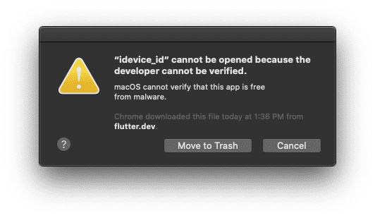
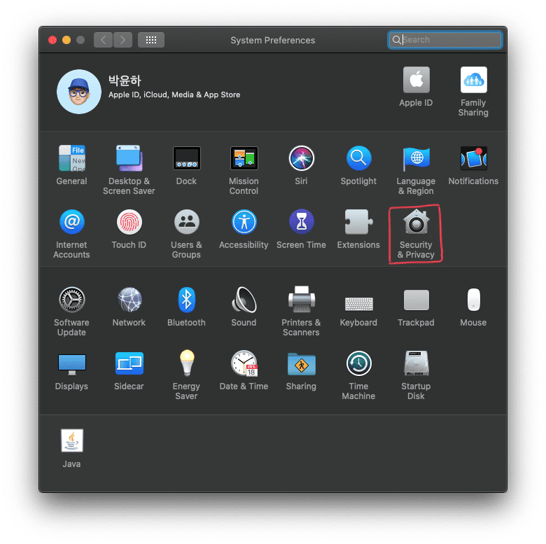
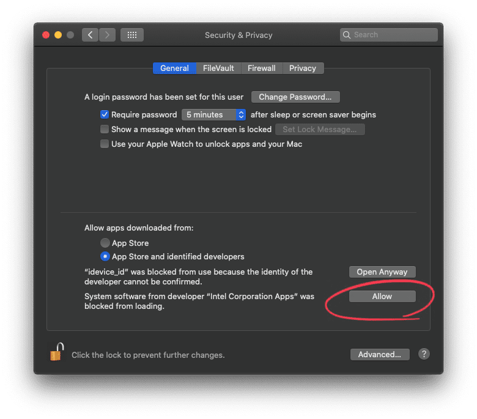

Flutter "idevice_id" cannot be opened because the developer cannot be verified. 에러
macOS Catalina 환경에서 플러터를 설치 후 명령어를 사용할 때 나오는 에러 해결하기

이 에러는 macOS 카탈리나를 올리고 플러터를 설치 후 터미널에서 명령어를 사용할 떄 나타난 에러이다. 무슨 문제인지 구글링을 해보니 10월 5일자로 미디엄에 관련 글이 있어서 참고하여 해결하였다.
TL; DR #
개발 환경 #
- macOS Catalina 10.15
- Flutter 1.9.1+hotfix.4
빠른 해결 방안(How to solve problem) #
- 터미널에서
$ xattr -d com.apple.quarantine <app-path>실행 - 시스템 환경설정(System Preference) > 보안(Security and Privacy) > idevice_id 허용
Key Term: xattr 명령은 파일이나 디렉토리에 속성 내용을 관리 할 수 있다.
언제 에러가 발생하는가? #
카탈리나 환경에서 플러터를 설치하고 아이폰을 맥북에 연결하고 flutter doctor를 돌리니 아이폰은 인식하는 프로그램에서 보안 알림이 떳다. 그래서 실제로 아이폰이 연결되어 있지만 no device가 떳고 flutter devices에서도 마찬가지로 인식이 되지 않았다.

자세한 해결 방안(How to solve problem) #
VNBNews.vn이 언급한바에 따르면 codesign이 최근 인증이슈가 있어서 xattr 명령어로 quarantine(격리?) 속성을 제거해야 한다고 한다. 아래의 명령어를 실행한다.
$ xattr -d com.apple.quarantine <app-path>
Caution:
<app-path>는 플러터-설치-경로/flutter/bin/cache/artifacts/libimobiledevice/idevice_id 를 넣어주면 된다.
위 명령어를 입력하고도 다시 에러가 나면 보안 설정에 들어가서 idevice_id 를 허용해줘야 한다.
 
Caution: 보안 설정에서 허용 버튼을 누르는 내용에 idevice_id 가 있으면 된다.
이제 flutter doctor를 실행해서 명령어가 정상적으로 수행될 것이다.
결론 #
써드 파티 앱(flutter)을 설치할 때 앱 허용 기준이 앱스토어에서 인증받은 개발자 설정되어 있는 경우 위에서 언급한 codesign 인증 이슈 때문에 에러가 나는 것 같다. 플러터가 아니더라도 앱스토어에서 내려받지 않고 플러터와 같이 압출파일을 내려받아 설차하는 경우 이런 에러가 나올 수 있을 것 같다. 그때에도 위와 같은 방식으로 해결하자.